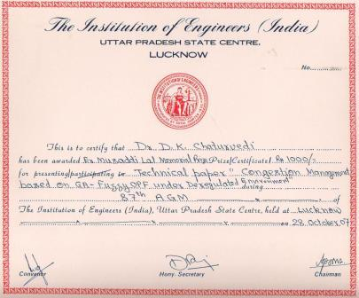

|
Prof. D.K. Chaturvedi DayalBagh Educational Institute |

Massuadi Lal Memorial Award:
|  |
In the 87th Annual General Meeting of The institution of Engineers (India), U.P. State Centre, Lucknow on Oct 28th, 2007 on the paper titled, "GA-Fuzzy Technique and it s a pplica t io n ". This award includes a cash prize of Rs. 2000/-. Prof. D.K. Chaturvedi receiving Award at Luknow, 2007. |